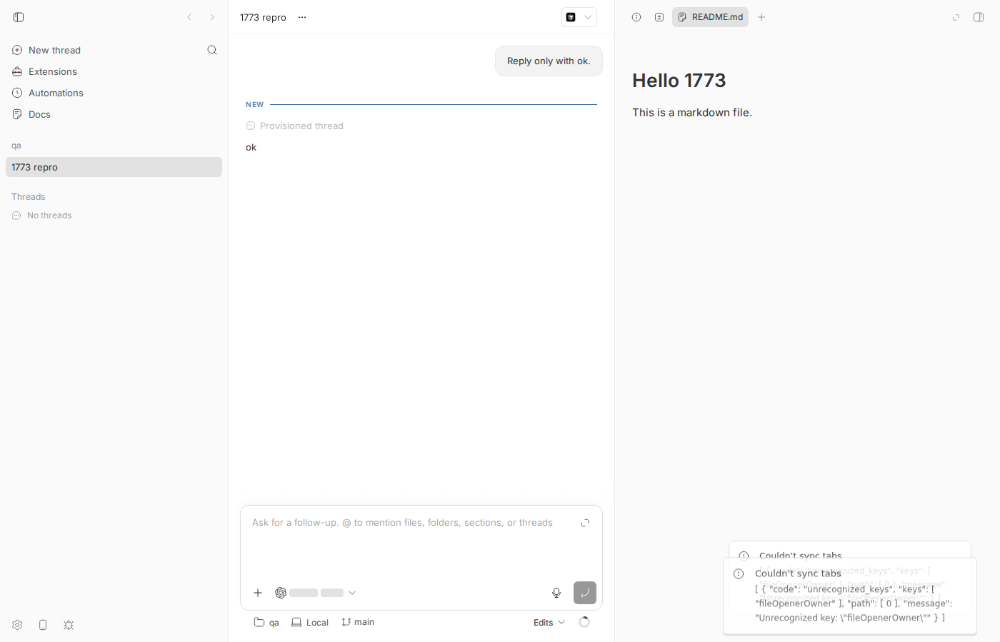
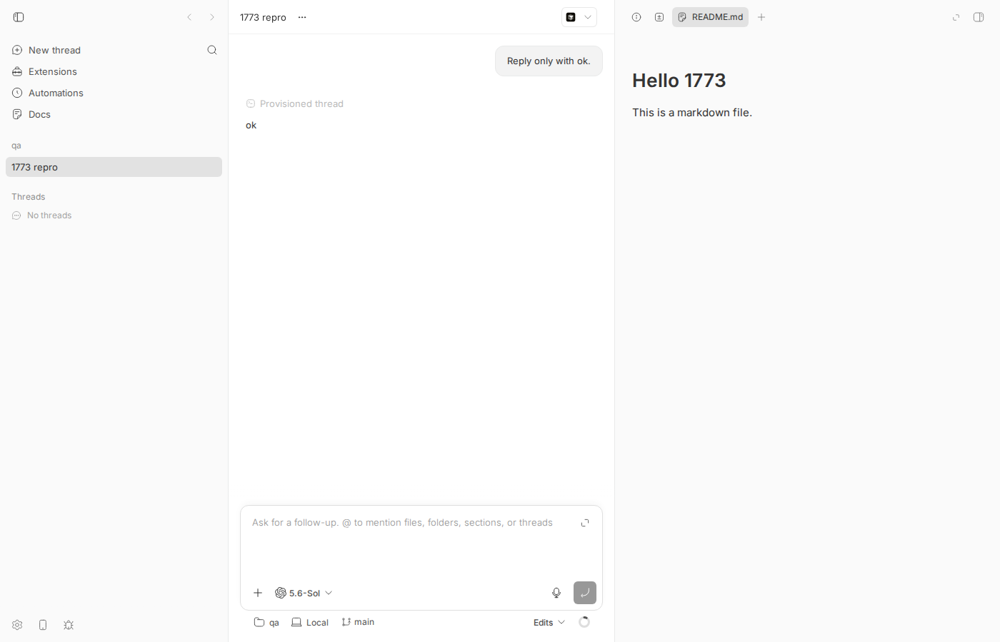
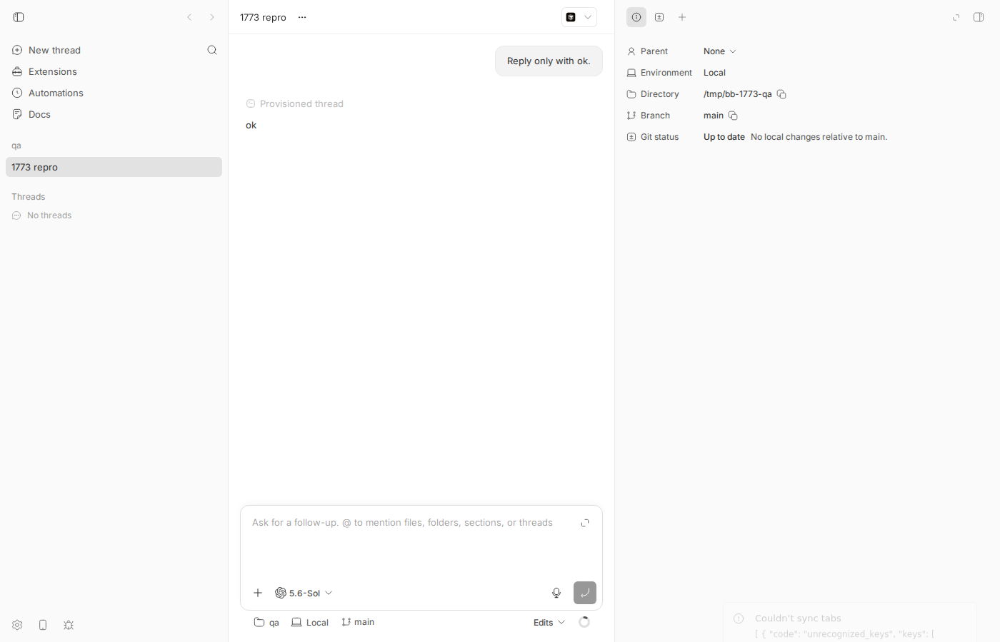

#1773 · Docs file opener fails tab sync because fileOpenerOwner is rejected
TL;DR
Plain-language framing. The right-hand panel of a bb thread has a strip of tabs (file previews, terminals, plugin panels…). That strip is persisted on the server per thread (PUT /api/v1/threads/:id/tabs) so it survives reloads and follows you across clients. A plugin can register a file opener: the Docs plugin claims .md files, so opening a Markdown file from a thread creates a plugin-panel tab that hosts the Docs editor instead of the built-in preview.
PR #1708 (merged 2026-08-17, after the desktop 0.38.0 release; the reporter's "0.38.0" is a post-release main/nightly build whose version string is still 0.38.0) made those opener tabs remember the native preview they replaced (handed to the opener as experimental_Original; the tab renders an "unavailable" fallback when it is missing) by adding a fileOpenerOwner object to the tab in the app-side model (apps/app/src/components/plugin/file-opener-tabs.ts:37-51), and it taught the app's local zod schema about it (apps/app/src/lib/fixed-panel-tabs-state.ts:197). It did not touch the shared server contract packages/server-contract/src/api/thread-tabs.ts:37-46, whose plugin-panel branch is .strict(). Before every write, the app runs the whole tab list through that strict contract schema (apps/app/src/lib/thread-tabs-sync.ts:155); zod throws unrecognized_keys: fileOpenerOwner, the PUT is never sent, and the catch handler shows the toast Couldn't sync tabs with the raw ZodError.message as description (apps/app/src/lib/thread-tabs-sync.ts:193-196). The issue's quoted text "unrecognized code: [fileOpenerOwner]" is a paraphrase of that JSON.
Consequence beyond the toast (not stated in the issue, verified here): as long as a Docs opener tab is in the strip, none of that thread's tab changes are persisted — the entire list fails validation. What the user then sees depends on the state of the thread's server-side tab row: (a) if the thread has never persisted tabs (server revision 0), the app takes a localStorage-migration branch and never reconciles, so the Docs tab stays visible and even survives a reload from localStorage — but it is still not on the server, and any other client sees nothing; (b) once the row has revision ≥ 1 (any earlier tab change was persisted, which is the normal case), the tab is lost on the next reconcile — for a discrete click in the Diff panel it renders and then disappears on reload (the reporter's scenario, screenshots below); for a non-click open such as bb thread open <id> README.md it is usually reconciled away in the same render pass and never appears (a timing race, observed on every run here but not guaranteed).
Claims vs findings
| Claim | Status | Evidence |
|---|---|---|
| Opening a Markdown workspace file with the Docs opener shows a "Couldn't sync tabs … fileOpenerOwner" toast | Verified | Reproduced twice on a dev instance at 16ceb3a54 (via bb thread open and via a Diff-panel click). Toast text: Couldn’t sync tabs / [ { "code": "unrecognized_keys", "keys": [ "fileOpenerOwner" ], … } ]. See screenshot. The wording "unrecognized code: [fileOpenerOwner]" in the issue is a paraphrase; the real description is the zod issue JSON. |
| The file still opens and Docs edits save correctly | Partially verified | Docs editor renders (Diff-panel click path, screenshot). Saving edits not exercised (independent of tab sync — Docs writes files via its own plugin routes). Via bb thread open on a thread whose server tab row is already at revision ≥ 1, the tab did not appear in any 150 ms sample (reconciled away before/at first paint, log); on a brand-new thread (revision 0) it does appear and survives reload from localStorage (log). |
| Failure is limited to persisted thread-tab state | Verified, with a bigger blast radius | Only PUT /threads/:id/tabs is affected — but it is skipped for the whole tab list. After reload the Docs tab is gone (screenshot) and any other tab opened while it existed is also not persisted. No PUT is sent at all (browser network log in browser-diff-click2-output.txt). |
Likely cause: strict plugin-panel branch of threadTabSchema lacks fileOpenerOwner; app-side schema accepts it | Verified | packages/server-contract/src/api/thread-tabs.ts:37-46 vs apps/app/src/lib/fixed-panel-tabs-state.ts:194-204; unit repro file-opener-tabs.issue-1773.test.ts fails on main with exactly that key. |
| Related to #1708 | Verified | git log -S fileOpenerOwner → only 564090dfb (#1708). Note #1708 is not in the 0.38.0 release: tag desktop-v0.38.0 = 45145e51a "Prepare bb-app 0.38.0" (release published 2026-08-15), while #1708 merged 2026-08-17T22:36Z; git merge-base --is-ancestor 564090dfb desktop-v0.38.0 is false and git grep fileOpenerOwner desktop-v0.38.0 -- apps/app/src finds nothing. packages/bb-app/package.json is still 0.38.0 at 16ceb3a54, so the reporter is on a post-release main/nightly build that reports 0.38.0. No commit on origin/main after 16ceb3a54 (tip a108fa7ef) touches the four relevant files (checked 2026-08-18). |
| Environment: bb desktop 0.38.0, Docs plugin 0.2.2, macOS | Consistent | plugins/docs/package.json is version 0.2.2 (plugin id simple-notes, display name "Docs"). Repro here is the web app on Linux; the code path is platform-independent. |
Environment
- bb worktree
/home/sawyer/projects/bb/.claude/worktrees/wf_570fde41-63f-4at16ceb3a540f81c1189efaffb27a39b1d9443abf5(detached; the worktree was created at a108fa7ef = origin/main tip and checked out to the base commit before the repro;git diff 16ceb3a54 a108fa7eftouches none of the relevant files). The first version of this report was produced in worktreewf_242c3e11-a10-28on a different dev instance (App :18477); every live step was re-run for this revision on the instance below. - Linux 7.0.0-29-generic, node v24.18.0, pnpm workspace, vitest 4.1.1, zod ^4.3.6, codex-cli 0.147.0 (provider used for the one tiny turn).
- Dev instance via
scripts/bb-dev-app current: Apphttp://localhost:15908, Serverhttp://localhost:23908, Host daemon127.0.0.1:31908, data dir/home/sawyer/.bb-dev/projects-bb-.claude-worktrees-wf_570fde41-63f-4-6fe45cac72ed(deleted after the run). Docs plugin installed withbb plugin install builtin:docs --yes(it is not enabled by default in a fresh dev data dir). Browser: headless Chromium viadev-browser. - Scratch repo
/tmp/bb-1773-qa(oneREADME.md), hosthost_irtfsf335s, projectproj_wvzf62vtzk, threadthr_c2k6ff5udf, environmentenv_z8iet3nmw7. Browser: headless Chromium viadev-browser(profilesbb1773rfor the fresh-thread run,bb1773r2for the rest).
Minimal reproduction
A. Unit level (no running app): the contract rejects what the app builds
File: 1773/repro/file-opener-tabs.issue-1773.test.ts (copy to apps/app/src/components/plugin/). It builds an opener tab with the real buildFileOpenerPanelTab and feeds it to the real threadTabsSchema — exactly what persistThreadTabs does. Run from apps/app: pnpm exec vitest run src/components/plugin/file-opener-tabs.issue-1773.test.ts.
// Repro for get-bb/bb#1773: plugin file-opener tabs carry `fileOpenerOwner`,
// but the strict server-contract `threadTabsSchema` (used by
// persistThreadTabs before every PUT /api/v1/threads/:id/tabs) rejects it.
import { threadTabsSchema } from "@bb/server-contract";
import { describe, expect, it } from "vitest";
import { buildFileOpenerPanelTab } from "./file-opener-tabs";
describe("issue #1773: docs file-opener tab vs thread-tabs contract", () => {
const openerTab = buildFileOpenerPanelTab(
{ id: "docs-editor", pluginId: "docs" },
{
path: "README.md",
source: {
kind: "workspace",
environmentId: "env-1",
projectId: null,
threadId: "thr-1",
},
},
{
kind: "workspace-file-preview",
environmentId: "env-1",
projectId: null,
tab: {
lineRange: null,
path: "README.md",
source: { kind: "working-tree" },
statusLabel: null,
},
threadId: "thr-1",
},
);
it("the opener tab carries fileOpenerOwner (this is what the app persists)", () => {
expect(openerTab.kind).toBe("plugin-panel");
expect(openerTab.fileOpenerOwner).toBeDefined();
});
it("threadTabsSchema accepts the opener tab (FAILS on main: unrecognized key)", () => {
const result = threadTabsSchema.safeParse([openerTab]);
if (!result.success) {
// This is exactly what the "Couldn't sync tabs" toast shows as description.
console.log("ZodError.message:\n" + result.error.message);
}
expect(result.success).toBe(true);
});
});
Expected: result.success === true. Actual on main (full output) — the second assertion fails and the printed message is verbatim what the toast shows:
RUN v4.1.1 /home/sawyer/projects/bb/.claude/worktrees/wf_570fde41-63f-4/apps/app
stdout | src/components/plugin/file-opener-tabs.issue-1773.test.ts > issue #1773: docs file-opener tab vs thread-tabs contract > threadTabsSchema accepts the opener tab (FAILS on main: unrecognized key)
ZodError.message:
[
{
"code": "unrecognized_keys",
"keys": [
"fileOpenerOwner"
],
"path": [
0
],
"message": "Unrecognized key: \"fileOpenerOwner\""
}
]
❯ src/components/plugin/file-opener-tabs.issue-1773.test.ts (2 tests | 1 failed) 9ms
× threadTabsSchema accepts the opener tab (FAILS on main: unrecognized key) 7ms
❯ src/lib/fixed-panel-tabs-sync.issue-1773.test.ts (1 test | 1 failed) 123ms
× persists a plugin file-opener tab instead of toasting and dropping it 122ms
⎯⎯⎯⎯⎯⎯⎯ Failed Tests 2 ⎯⎯⎯⎯⎯⎯⎯
FAIL src/lib/fixed-panel-tabs-sync.issue-1773.test.ts > issue #1773: docs file-opener tab sync > persists a plugin file-opener tab instead of toasting and dropping it
AssertionError: expected "vi.fn()" to not be called at all, but actually been called 1 times
Received:
1st vi.fn() call:
Array [
"Couldn’t sync tabs",
Object {
"description": "[
{
"code": "unrecognized_keys",
"keys": [
"fileOpenerOwner"
],
"path": [
1
],
"message": "Unrecognized key: \"fileOpenerOwner\""
}
]",
},
]
Number of calls: 1
❯ src/lib/fixed-panel-tabs-sync.issue-1773.test.ts:127:34
125| // Bug on main: no PUT is ever sent, the user gets the toast, and …
126| // is reconciled away against the server list.
127| expect(toastMocks.error).not.toHaveBeenCalled(); // FAILS on main
| ^
128| expect(apiMocks.updateThreadTabs).toHaveBeenCalledTimes(1);
129| expect(result.current.state.secondary.tabs.map((tab) => tab.id)).t…
⎯⎯⎯⎯⎯⎯⎯⎯⎯⎯⎯⎯⎯⎯⎯⎯⎯⎯⎯⎯⎯⎯⎯⎯[1/2]⎯
FAIL src/components/plugin/file-opener-tabs.issue-1773.test.ts > issue #1773: docs file-opener tab vs thread-tabs contract > threadTabsSchema accepts the opener tab (FAILS on main: unrecognized key)
AssertionError: expected false to be true // Object.is equality
- Expected
+ Received
- true
+ false
❯ src/components/plugin/file-opener-tabs.issue-1773.test.ts:45:28
43| console.log("ZodError.message:\n" + result.error.message);
44| }
45| expect(result.success).toBe(true);
| ^
46| });
47| });
⎯⎯⎯⎯⎯⎯⎯⎯⎯⎯⎯⎯⎯⎯⎯⎯⎯⎯⎯⎯⎯⎯⎯⎯[2/2]⎯
Test Files 2 failed (2)
Tests 2 failed | 1 passed (3)
Start at 08:09:40
Duration 1.26s (transform 632ms, setup 29ms, import 1.13s, tests 133ms, environment 402ms)
B. Hook level: the write is never attempted, the user gets the toast
File: 1773/repro/fixed-panel-tabs-sync.issue-1773.test.ts (copy to apps/app/src/lib/; same mocking style as the neighbouring fixed-panel-tabs-sync.test.ts). It renders useFixedPanelTabsState/useUpdateFixedPanelTabsState for a thread whose server list is [thread-info], adds the Docs opener tab the way openTab() does, and asserts that a PUT happens and no error toast fires. On main: appToast.error("Couldn’t sync tabs", …) is called once and sdk.threads.tabs.update is called zero times (the failure is client-side, before any HTTP).
// @vitest-environment jsdom
// Repro for get-bb/bb#1773 at the hook level: opening a plugin file-opener
// tab (what the Docs plugin's `.md` opener produces) in a thread never
// reaches PUT /threads/:id/tabs — `threadTabsSchema.parse` throws
// client-side because the contract's `plugin-panel` branch is strict and
// has no `fileOpenerOwner` — and the local strip is then reconciled back
// to the server list, dropping the tab.
import { act, cleanup, renderHook, waitFor } from "@testing-library/react";
import { QueryClient, QueryClientProvider } from "@tanstack/react-query";
import { createElement, type ReactNode } from "react";
import { afterEach, describe, expect, it, vi } from "vitest";
import { buildFileOpenerPanelTab } from "@/components/plugin/file-opener-tabs";
import { createThreadInfoFixedPanelTab } from "./fixed-panel-tabs-state";
import {
useFixedPanelTabsState,
useUpdateFixedPanelTabsState,
} from "./fixed-panel-tabs";
const apiMocks = vi.hoisted(() => ({
getThreadTabs: vi.fn(),
updateThreadTabs: vi.fn(),
}));
const toastMocks = vi.hoisted(() => ({ error: vi.fn() }));
vi.mock("./sdk", async (importOriginal) => {
const actual = await importOriginal<typeof import("./sdk")>();
return {
...actual,
sdk: {
threads: {
tabs: {
get: apiMocks.getThreadTabs,
update: apiMocks.updateThreadTabs,
},
},
},
};
});
vi.mock("@/components/ui/app-toast", () => ({
appToast: { error: toastMocks.error, success: vi.fn(), info: vi.fn() },
}));
function createQueryWrapper(queryClient: QueryClient) {
return function QueryWrapper({ children }: { children: ReactNode }) {
return createElement(
QueryClientProvider,
{ client: queryClient },
children,
);
};
}
afterEach(() => {
cleanup();
apiMocks.getThreadTabs.mockReset();
apiMocks.updateThreadTabs.mockReset();
toastMocks.error.mockReset();
window.localStorage.clear();
});
describe("issue #1773: docs file-opener tab sync", () => {
it("persists a plugin file-opener tab instead of toasting and dropping it", async () => {
const threadId = "thr-1773";
const infoTab = createThreadInfoFixedPanelTab();
const docsTab = buildFileOpenerPanelTab(
{ id: "docs", pluginId: "simple-notes" },
{
path: "README.md",
source: {
kind: "workspace",
environmentId: "env-1",
projectId: null,
threadId,
},
},
{
kind: "workspace-file-preview",
environmentId: "env-1",
projectId: null,
tab: {
lineRange: null,
path: "README.md",
source: { kind: "working-tree" },
statusLabel: null,
},
threadId,
},
);
apiMocks.getThreadTabs.mockResolvedValue({ revision: 3, tabs: [infoTab] });
apiMocks.updateThreadTabs.mockImplementation(async (args) => ({
revision: 4,
tabs: args.tabs,
}));
const queryClient = new QueryClient({
defaultOptions: { queries: { retry: false } },
});
const { result } = renderHook(
() => ({
state: useFixedPanelTabsState(threadId, threadId),
update: useUpdateFixedPanelTabsState(threadId, threadId),
}),
{ wrapper: createQueryWrapper(queryClient) },
);
await waitFor(() => {
expect(result.current.state.secondary.tabs).toEqual([infoTab]);
});
// What openTab() does when the Docs opener claims README.md.
act(() => {
result.current.update((current) => ({
...current,
secondary: {
activeTabId: docsTab.id,
isOpen: true,
tabs: [infoTab, docsTab],
},
}));
});
// Let the write queue settle.
await act(async () => {
await new Promise((resolve) => setTimeout(resolve, 50));
});
// Bug on main: no PUT is ever sent, the user gets the toast, and the tab
// is reconciled away against the server list.
expect(toastMocks.error).not.toHaveBeenCalled(); // FAILS on main
expect(apiMocks.updateThreadTabs).toHaveBeenCalledTimes(1);
expect(result.current.state.secondary.tabs.map((tab) => tab.id)).toEqual([
infoTab.id,
docsTab.id,
]);
});
});
C. Live app, path 1: bb thread open — toast, no PUT; tab visible only while the server row is at revision 0
Setup (shared by C and D). All commands run from your bb worktree; replace the <…> placeholders with the ids printed for your instance.
pnpm install --frozen-lockfile --prefer-offline && pnpm exec turbo run build && scripts/bb-dev-app current; note App/Server URLs.eval "$(scripts/bb-dev-app env)"; alsounset BB_THREAD_ID BB_ENVIRONMENT_ID BB_THREAD_STORAGEif you run this from inside a bb thread.mkdir /tmp/bb-1773-qa && cd /tmp/bb-1773-qa && git init && printf '# Hello 1773\n\nThis is a markdown file.\n' > README.md && git add . && git commit -m initpnpm bb:dev machine list→ host id;curl -s -X POST $BB_SERVER_URL/api/v1/projects -H 'content-type: application/json' -d '{"name":"qa","source":{"type":"local_path","path":"/tmp/bb-1773-qa","hostId":"<host id>"}}'→ project id.pnpm bb:dev plugin install builtin:docs --yes(Docs plugin id issimple-notes). Leave the file-opener preference at Automatic (default) — with a single.mdopener registered, Automatic already routes.mdto Docs (apps/app/src/lib/plugin-slot-resolvers.ts:299-329).pnpm bb:dev thread spawn --project <proj> --provider codex --permission-mode accept-edits --title "1773 repro" --prompt "Reply only with ok." --json→ thread id; wait until idle.curl -s $BB_SERVER_URL/api/v1/threads/<thread>/tabsnow returns{"revision":0,"tabs":[]}.- Open
http://localhost:<app port>/projects/<proj>/threads/<thread>in a browser.
C1 — fresh thread (server revision 0). Run pnpm bb:dev thread open <thread> README.md --json. Expected: Docs tab opens, one PUT /tabs persists it, no toast. Actual: the toast Couldn’t sync tabs + zod JSON appears (twice: once for the open, once for the localStorage-migration write that the revision-0 branch schedules), no PUT is sent, the server row stays at {"revision":0,"tabs":[]} — but the Docs tab is shown and it survives a reload, because with revision === 0 and non-empty local tabs useFixedPanelTabsState only schedules a migration and never reconciles against the (empty) server list. Recorded with browser-reload-and-watch-fast.js (config pressDiffFirst:false) + run-thread-open.sh; output browser-watch-C-fresh-rev0-output.txt:
CONFIG: {"APP_URL":"http://localhost:15908","PROJECT_ID":"proj_wvzf62vtzk","THREAD_ID":"thr_c2k6ff5udf","PRESS_DIFF_FIRST":false}
TIMELINE:
168ms strip=[]
5643ms strip=["Close README.md"]
TOAST: "Couldn’t sync tabs\n[ { \"code\": \"unrecognized_keys\", \"keys\": [ \"fileOpenerOwner\" ], \"path\": [ 0 ], \"message\": \"Unrecognized key: \\\"fileOpenerOwner\\\"\" } ]\n---\nCouldn’t sync tabs\n[ { \"code\": \"unrecognized_keys\", \"keys\": [ \"fileOpenerOwner\" ], \"path\": [ 0 ], \"message\": \"Unrecognized key: \\\"fileOpenerOwner\\\"\" } ]"
REQS:
1787065097226 GET http://localhost:15908/api/v1/threads/thr_c2k6ff5udf/tabs => 200
1787065097295 GET http://localhost:15908/api/v1/threads/thr_c2k6ff5udf/tabs => 200 body={"revision":0,"tabs":[]}
1787065097315 GET http://localhost:15908/api/v1/threads/thr_c2k6ff5udf/tabs => 200 body={"revision":0,"tabs":[]}
1787065097387 GET http://localhost:15908/api/v1/threads/thr_c2k6ff5udf/tabs => 200
1787065097391 GET http://localhost:15908/api/v1/threads/thr_c2k6ff5udf/tabs => 200 body={"revision":0,"tabs":[]}
STRIP AFTER RELOAD: ["Close README.md"]
REQS AFTER RELOAD:
1787065097315 GET http://localhost:15908/api/v1/threads/thr_c2k6ff5udf/tabs => 200 body={"revision":0,"tabs":[]}
1787065097387 GET http://localhost:15908/api/v1/threads/thr_c2k6ff5udf/tabs => 200
1787065097391 GET http://localhost:15908/api/v1/threads/thr_c2k6ff5udf/tabs => 200 body={"revision":0,"tabs":[]}

bb thread open … README.md the Docs tab (README.md, Docs icon) is open in the right panel and the "Couldn’t sync tabs" toast is at bottom-right. Nothing was written to the server.
GET /tabs still returns revision 0, empty).Precondition for C2 and D (server revision ≥ 1). Any successfully persisted tab change moves the row off revision 0 — this is the normal state of a thread that has been used for a while. In a browser profile that has no local tabs for this thread (a new dev-browser --browser name, or after clearing site data), press Ctrl+D once in the thread: the Diff panel opens, PUT /tabs returns 200 and GET /tabs now returns {"revision":1,"tabs":[{"id":"git-diff:git-diff:none","kind":"git-diff"}]}. (Equivalent shortcut: curl -X PUT $BB_SERVER_URL/api/v1/threads/<thread>/tabs -H 'content-type: application/json' -d '{"expectedRevision":0,"tabs":[{"id":"thread-info:thread-info:none","kind":"thread-info"}]}'.) The watcher script does this for you when the config has pressDiffFirst:true.
C2 — same command, revision ≥ 1. Run pnpm bb:dev thread open <thread> README.md --json again. Expected: Docs tab opens and persists. Actual: toast, no PUT, and the strip — sampled every 150 ms — never showed a README tab: the write queue rejected in microtasks and the reconcile effect replaced the local list with the server list before the first paint (a timing race; every run here behaved this way, but a slower machine could flash the tab briefly). After reload the strip is still empty. Output browser-watch-C-rev1-output.txt:
CONFIG: {"APP_URL":"http://localhost:15908","PROJECT_ID":"proj_wvzf62vtzk","THREAD_ID":"thr_c2k6ff5udf","PRESS_DIFF_FIRST":true}
PRECONDITION strip after Ctrl+D: []
TIMELINE:
154ms strip=[]
TOAST: "Couldn’t sync tabs\n[ { \"code\": \"unrecognized_keys\", \"keys\": [ \"fileOpenerOwner\" ], \"path\": [ 1 ], \"message\": \"Unrecognized key: \\\"fileOpenerOwner\\\"\" } ]"
REQS:
1787065385349 GET http://localhost:15908/api/v1/threads/thr_c2k6ff5udf/tabs => 200 body={"revision":0,"tabs":[]}
1787065388405 PUT http://localhost:15908/api/v1/threads/thr_c2k6ff5udf/tabs => 200
1787065388424 GET http://localhost:15908/api/v1/threads/thr_c2k6ff5udf/tabs => 200 body={"revision":1,"tabs":[{"id":"git-diff:git-diff:none","kind":"git-diff"}]}
1787065390461 GET http://localhost:15908/api/v1/threads/thr_c2k6ff5udf/tabs => 200 body={"revision":1,"tabs":[{"id":"git-diff:git-diff:none","kind":"git-diff"}]}
STRIP AFTER RELOAD: []
REQS AFTER RELOAD:
1787065388405 PUT http://localhost:15908/api/v1/threads/thr_c2k6ff5udf/tabs => 200
1787065388424 GET http://localhost:15908/api/v1/threads/thr_c2k6ff5udf/tabs => 200 body={"revision":1,"tabs":[{"id":"git-diff:git-diff:none","kind":"git-diff"}]}
1787065390461 GET http://localhost:15908/api/v1/threads/thr_c2k6ff5udf/tabs => 200 body={"revision":1,"tabs":[{"id":"git-diff:git-diff:none","kind":"git-diff"}]}

bb thread open … README.md with the server row at revision 1: the toast fades in at bottom-right; the panel strip (Info, Diff, +) has no README tab — the opener tab was reconciled away immediately.How to run the watcher yourself: write ~/.dev-browser/tmp/1773-config.json = {"appUrl":"http://localhost:<app port>","projectId":"<proj>","threadId":"<thread>","pressDiffFirst":false}, then in one shell BB_WORKTREE=<your worktree> BB_SERVER_URL=… BB_HOST_DAEMON_PORT=… THREAD_ID=<thread> ./run-thread-open.sh and in another dev-browser --browser bb1773 --headless --timeout 120 run browser-reload-and-watch-fast.js (the --timeout 120 is required: the script polls for ~15 s plus two 6 s page loads, longer than dev-browser's 30 s default). run-thread-open.sh waits for the browser script's ready marker and then runs bb thread open.
D. Live app, path 2: click in the Diff panel — Docs editor opens, toast, tab lost on reload (the reporter's scenario)
- Make sure the precondition above holds (server revision ≥ 1; a used thread already satisfies it).
echo "extra line" >> /tmp/bb-1773-qa/README.mdso the Diff panel lists README.md.- In the thread, show the Diff panel (Ctrl+D toggles it) and click the
README.mdfile header in the diff. - Reload the page.
Script: browser-diff-click2.js (same 1773-config.json; run with dev-browser --browser bb1773 --headless --timeout 120 run browser-diff-click2.js); output browser-diff-click2-output.txt:
CONFIG: {"APP_URL":"http://localhost:15908","PROJECT_ID":"proj_wvzf62vtzk","THREAD_ID":"thr_c2k6ff5udf"}
open button count: 1
STRIP TIMELINE:
160ms|["Close README.md"] originalToggle=0
TOAST: "Couldn’t sync tabs\n[ { \"code\": \"unrecognized_keys\", \"keys\": [ \"fileOpenerOwner\" ], \"path\": [ 1 ], \"message\": \"Unrecognized key: \\\"fileOpenerOwner\\\"\" } ]"
REQS: ["GET http://localhost:15908/api/v1/threads/thr_c2k6ff5udf/tabs => 200","GET http://localhost:15908/api/v1/threads/thr_c2k6ff5udf/tabs => 200","GET http://localhost:15908/api/v1/threads/thr_c2k6ff5udf/tabs => 200"]
STRIP AFTER RELOAD: []
Expected: the Docs tab opens, a PUT persists it, no toast, the tab is still there after reload. Actual: the tab opens (discrete click → React commits the local state before the write queue rejects), the toast appears, no PUT is sent (only GETs), and after reload the tab is gone; GET /tabs still returns the revision-1 row with only the git-diff tab.

README.md file header.

Root cause
Mechanism. buildFileOpenerPanelTab spreads a normal plugin-panel tab and adds fileOpenerOwner: owner (added in #1708 so the tab can hand the diverted native preview to the opener component as experimental_Original via PluginPanelActions.tsx:338-360; when the field is missing the tab renders UnavailableFileOpenerTab):
export function buildFileOpenerPanelTab(opener, file, owner): PluginPanelFixedPanelTab {
return {
...createPluginPanelFixedPanelTab({ actionId: `file-opener:${opener.id}`, paramsJson: …, pluginId: opener.pluginId, title: … }),
fileOpenerOwner: owner,
};
}
The app's local tab model knows the field (apps/app/src/lib/fixed-panel-tabs-state.ts:197 schema, apps/app/src/lib/fixed-panel-tabs-state.ts:272 type; stripTransientFixedPanelTabForStorage even normalises it for storage at apps/app/src/lib/fixed-panel-tabs-state.ts:844-852). The shared contract that the sync layer and the server both use does not:
// packages/server-contract/src/api/thread-tabs.ts:37-46 (unchanged by #1708)
z.object({
actionId: z.string().min(1).max(THREAD_TAB_PATH_MAX_LENGTH),
id: threadTabIdSchema,
kind: z.literal("plugin-panel"),
paramsJson: z.string().max(THREAD_TAB_PARAMS_MAX_LENGTH).nullable(),
pluginId: z.string().min(1).max(THREAD_TAB_PATH_MAX_LENGTH),
title: z.string().min(1).max(THREAD_TAB_TITLE_MAX_LENGTH),
})
.strict(),
Every persisted write goes through persistThreadTabs, which calls threadTabsSchema.parse(tabs) on the whole list before sdk.threads.tabs.update. .strict() + an unknown key → ZodError → the promise rejects → enqueueThreadTabsWrite shows appToast.error("Couldn’t sync tabs", { description: error.message }) (hence the JSON in the toast) and invalidates the cached tabs. TypeScript does not catch this: FixedPanelTab's plugin-panel variant is a structural superset of the contract's, so passing it where readonly ThreadTab[] is expected compiles fine; only the runtime schema disagrees.
Why the tab sometimes vanishes immediately, and why a brand-new thread hides the loss. If the server row is at revision 0 and the local strip is non-empty, the effect in useFixedPanelTabsState only schedules a localStorage migration write (which also fails the same parse) and returns without reconciling — that is why C1 keeps the tab locally. Once the row is at revision ≥ 1: useFixedPanelTabsState's effect reconciles local tabs to the server list whenever state.secondary.tabs or the query data changes, unless a write is pending. When the open is triggered outside a discrete React event (websocket message from bb thread open), the write queue rejects in microtasks (cached GET → synchronous parse throw → finally decrements the pending count) before React's scheduled render/effect runs; the effect then sees "no pending write" and replaces the local list with the server list, so the opener tab is dropped before it renders (observed on every run; it is a race, not a guarantee). From a discrete click, React commits synchronously, the effect runs while the write is still pending, and the tab stays until the next reconcile (reload). All three behaviours (C1, C2, D) are visible in the repro logs. Nothing in the app strips fileOpenerOwner before the contract parse, and the server route (apps/server/src/routes/threads/tabs.ts:18-24) parses stored JSON with the same strict schema, so an app-side workaround that sent the field anyway would get a 400 instead.
Deeper issue. Two schemas describe the same persisted object (app fixedPanelTabsStateSchema for localStorage, contract threadTabSchema for the server) and nothing ties them together; #1708 extended one and not the other, and no test parses an opener tab with the contract. Also note that fileOpenerOwner is derivable from paramsJson for the workspace/host/thread-storage cases (path + source; lineRange is nulled for storage anyway and statusLabel/source are fixed to non-deleted working-tree by ownerRequestForOpenRequest), so persisting it at all is a design choice worth revisiting. Side observation (not this bug): the New-tab file search and Recent items open files through selectFileSearchResult (apps/app/src/components/secondary-panel/useThreadFileTabs.ts:517-544), which does not apply opener diversion, contradicting the "every file-open flow funnels through here" comment on openTab; that is why my first attempt via "Search files" got the built-in preview.
Proposed fix (first principles)
Teach the shared contract the field, mirroring the app schema, so the app-side parse, the PUT body validation and the server's read-back all accept it. Optional-ness is semantic here (present only on opener tabs, absent on plain plugin-panel action tabs), which is allowed by the repo's contract rules. Diff (proposed-fix.diff, applied and reverted in my worktree):
diff --git a/packages/server-contract/src/api/thread-tabs.ts b/packages/server-contract/src/api/thread-tabs.ts
index 13cc3a47a..17f4082b8 100644
--- a/packages/server-contract/src/api/thread-tabs.ts
+++ b/packages/server-contract/src/api/thread-tabs.ts
@@ -31,12 +31,61 @@ const threadTabEnvironmentFileSourceSchema = z.discriminatedUnion("kind", [
.strict(),
]);
+// A plugin file-opener tab (see apps/app file-opener-tabs.ts) retains the
+// native preview it diverted (passed to the opener as experimental_Original).
+// Present only on opener tabs; plain plugin-panel action tabs omit it.
+const threadTabFileOpenerOwnerSchema = z.discriminatedUnion("kind", [
+ z
+ .object({
+ kind: z.literal("workspace-file-preview"),
+ environmentId: z.string().min(1).nullable(),
+ projectId: z.string().min(1).nullable(),
+ tab: z
+ .object({
+ lineRange: threadTabLineRangeSchema.nullable(),
+ path: threadTabPathSchema,
+ source: threadTabEnvironmentFileSourceSchema,
+ statusLabel: z.literal("deleted").nullable(),
+ })
+ .strict(),
+ threadId: z.string().min(1).nullable(),
+ })
+ .strict(),
+ z
+ .object({
+ kind: z.literal("host-file-preview"),
+ environmentId: z.string().min(1),
+ tab: z
+ .object({
+ lineRange: threadTabLineRangeSchema.nullable(),
+ path: threadTabPathSchema,
+ })
+ .strict(),
+ threadId: z.string().min(1),
+ })
+ .strict(),
+ z
+ .object({
+ kind: z.literal("thread-storage-file-preview"),
+ environmentId: z.string().min(1).nullable(),
+ tab: z
+ .object({
+ lineRange: threadTabLineRangeSchema.nullable(),
+ path: threadTabPathSchema,
+ })
+ .strict(),
+ threadId: z.string().min(1),
+ })
+ .strict(),
+]);
+
export const threadTabSchema = z.discriminatedUnion("kind", [
z.object({ id: threadTabIdSchema, kind: z.literal("thread-info") }).strict(),
z.object({ id: threadTabIdSchema, kind: z.literal("git-diff") }).strict(),
z
.object({
actionId: z.string().min(1).max(THREAD_TAB_PATH_MAX_LENGTH),
+ fileOpenerOwner: threadTabFileOpenerOwnerSchema.optional(),
id: threadTabIdSchema,
kind: z.literal("plugin-panel"),
paramsJson: z.string().max(THREAD_TAB_PARAMS_MAX_LENGTH).nullable(),
Verified with the fix applied: both repro tests pass, the existing fixed-panel-tabs-*, useThreadFileTabs and apps/server/test/public/public-thread-tabs.test.ts suites pass (vitest-with-fix.txt), turbo typecheck for @bb/server-contract, @bb/app, @bb/server passes (log), and the live Diff-panel flow (re-run for this revision on the :15908 instance, fix applied via git apply and picked up by the dev servers) now sends PUT … => 200, shows no toast, and the tab survives reload (output, screenshot; persisted row in tabs-after-fix.json):
CONFIG: {"APP_URL":"http://localhost:15908","PROJECT_ID":"proj_wvzf62vtzk","THREAD_ID":"thr_c2k6ff5udf"}
open button count: 1
STRIP TIMELINE:
161ms|["Close README.md"] originalToggle=0
TOAST: ""
REQS: ["GET http://localhost:15908/api/v1/threads/thr_c2k6ff5udf/tabs => 200","GET http://localhost:15908/api/v1/threads/thr_c2k6ff5udf/tabs => 200","PUT http://localhost:15908/api/v1/threads/thr_c2k6ff5udf/tabs => 200","GET http://localhost:15908/api/v1/threads/thr_c2k6ff5udf/tabs => 200"]
STRIP AFTER RELOAD: ["Close README.md"]

What else must move with it / what could go wrong. (1) The plugin-sdk bundles the contract's zod types: packages/plugin-sdk/bundled-types/bb-plugin-sdk.d.ts and packages/templates/src/generated/plugin-sdk-dts.generated.ts are committed build outputs and change when this schema changes — regenerate them in the same PR (turbo build did it automatically in my worktree). (2) Delete the now-redundant app-side fileOpenerOwnerRequestSchema in fixed-panel-tabs-state.ts in favour of the contract's, or at least add a test that parses buildFileOpenerPanelTab(...) output with threadTabsSchema (test A above) so the two cannot drift again. (3) No HOST_DAEMON_PROTOCOL_VERSION bump is needed: this is app↔server, not server↔daemon. (4) Rows written by a fixed client are readable only by a fixed server (same release), which is the normal app+server pairing; an old server would 400 the PUT rather than corrupt anything. (5) Alternative, smaller-wire design: do not persist fileOpenerOwner; rebuild it from paramsJson on read. More code, and it changes what the opener receives as experimental_Original for the host/thread-storage variants, so I would ship the contract fix first.
Secondary robustness suggestion: enqueueThreadTabsWrite should not surface ZodError.message (a JSON dump) as the toast description; and the app could avoid dropping local-only tabs during reconcile when the last write failed for a client-side reason. Both are separate from the root cause.
PR review
No open PRs are linked to this issue (searched GitHub for fileOpenerOwner / "1773"; nothing).
Related issues
- #1708 Unify plugin app slot resolution and replacement hosts — merged 2026-08-17 (after the desktop-v0.38.0 release of 2026-08-15; it is on main and will ship in the next release); introduced
fileOpenerOwner(the regression source). - No other issue mentions "sync tabs" or file openers (GitHub search 2026-08-18).
Appendix
Files
- file-opener-tabs.issue-1773.test.ts, fixed-panel-tabs-sync.issue-1773.test.ts — repro tests (fail on main, pass with the fix). Outputs: main, with fix.
- browser-reload-and-watch-fast.js + run-thread-open.sh → C1 output (revision 0), C2 output (revision 1); browser-watch-fast-output.txt is the first-version run (revision > 0 after a curl reset). All dev-browser scripts read
~/.dev-browser/tmp/1773-config.jsonfor app URL / project / thread and need--timeout 120. - browser-diff-click.js (opens Diff panel, lists candidate buttons), browser-diff-click2.js → output (path D); browser-diff-click2-fix.js → output (with fix).
- proposed-fix.diff, typecheck-with-fix.txt, tabs-after-fix.json.
Diff-panel browser script (path D)
// dev-browser script (continues browser-diff-click.js): click "Open README.md"
// in the Diff panel, poll the tab strip, capture the toast, then reload to see
// whether the Docs tab survived.
const page = await browser.getPage("main");
const reqs = [];
page.on("response", async (r) => {
if (r.url().includes("/tabs")) {
reqs.push(r.request().method() + " " + r.url() + " => " + r.status());
}
});
await page.setViewportSize({ width: 1400, height: 900 });
// Configure for your instance via ~/.dev-browser/tmp/1773-config.json
// {"appUrl":"http://localhost:<app port>","projectId":"proj_x","threadId":"thr_x"}
// Run with: dev-browser --browser <name> --headless --timeout 120 run <this file>
let cfg = {};
try { cfg = JSON.parse(await readFile("1773-config.json")); } catch {}
const APP_URL = cfg.appUrl ?? "http://localhost:15908";
const PROJECT_ID = cfg.projectId ?? "proj_wvzf62vtzk";
const THREAD_ID = cfg.threadId ?? "thr_c2k6ff5udf";
console.log("CONFIG:", JSON.stringify({ APP_URL, PROJECT_ID, THREAD_ID }));
await page.goto(`${APP_URL}/projects/${PROJECT_ID}/threads/${THREAD_ID}`);
await page.waitForTimeout(6000);
// Ctrl+D toggles the Diff panel (keyboard shortcut; the toolbar button can be
// off-screen when the right panel is collapsed).
await page.locator("body").click({ position: { x: 600, y: 300 } });
// Press Ctrl+D until the README.md file header in the Diff panel is actually
// visible (Ctrl+D toggles, and the right panel may start collapsed).
// (A collapsed right panel keeps its content in the DOM but clipped, so check
// the header's bounding box is inside the viewport rather than isVisible().)
const readmeHeader = page.locator("button").filter({ hasText: /^\u200eREADME\.md$/ }).first();
const headerOnScreen = async () => {
const box = await readmeHeader.boundingBox().catch(() => null);
return box !== null && box.x + box.width <= 1400 && box.width > 0;
};
for (let i = 0; i < 4 && !(await headerOnScreen()); i++) {
await page.keyboard.press("Control+d");
await page.waitForTimeout(1500);
}
await page.waitForTimeout(3000);
const openBtn = page.locator("button").filter({ hasText: /^\u200eREADME\.md$/ }).first();
console.log("open button count:", await openBtn.count());
await openBtn.click();
const t0 = Date.now();
const timeline = [];
let toastText = "";
let shot = false;
let docsShot = false;
for (let i = 0; i < 40; i++) {
await page.waitForTimeout(150);
const strip = await page
.locator("[data-tab-pill-close]")
.evaluateAll((els) => els.map((e) => e.getAttribute("aria-label")));
const original = await page.getByText("Original", { exact: true }).count();
const entry = JSON.stringify(strip) + " originalToggle=" + original;
if (timeline.length === 0 || timeline[timeline.length - 1].split("|")[1] !== entry) {
timeline.push((Date.now() - t0) + "ms|" + entry);
}
if (original > 0 && !docsShot) {
docsShot = true;
await saveScreenshot(await page.screenshot(), "1773-diff-docs-open.png");
}
const t = await page.locator("[data-sonner-toast]").allInnerTexts();
if (t.length > 0 && t.join("").trim() !== "" && !shot) {
shot = true;
toastText = t.join("\n---\n");
await saveScreenshot(await page.screenshot(), "1773-diff-toast.png");
}
}
console.log("STRIP TIMELINE:\n" + timeline.join("\n"));
console.log("TOAST:", JSON.stringify(toastText));
console.log("REQS:", JSON.stringify(reqs));
await saveScreenshot(await page.screenshot(), "1773-diff-after.png");
await page.reload();
await page.waitForTimeout(6000);
const stripAfterReload = await page
.locator("[data-tab-pill-close]")
.evaluateAll((els) => els.map((e) => e.getAttribute("aria-label")));
console.log("STRIP AFTER RELOAD:", JSON.stringify(stripAfterReload));
await saveScreenshot(await page.screenshot(), "1773-diff-reload.png");
Persisted row after the fix (GET /api/v1/threads/thr_c2k6ff5udf/tabs)
{
"revision": 2,
"tabs": [
{
"id": "git-diff:git-diff:none",
"kind": "git-diff"
},
{
"actionId": "file-opener:docs",
"fileOpenerOwner": {
"kind": "workspace-file-preview",
"environmentId": "env_z8iet3nmw7",
"projectId": null,
"tab": {
"lineRange": null,
"path": "README.md",
"source": {
"kind": "working-tree"
},
"statusLabel": null
},
"threadId": "thr_c2k6ff5udf"
},
"id": "plugin-panel:simple-notes%3Afile-opener%3Adocs%3A%7B%22path%22%3A%22README.md%22%2C%22source%22%3A%7B%22kind%22%3A%22workspace%22%2C%22environmentId%22%3A%22env_z8iet3nmw7%22%2C%22projectId%22%3Anull%2C%22threadId%22%3A%22thr_c2k6ff5udf%22%7D%7D:none",
"kind": "plugin-panel",
"paramsJson": "{\"path\":\"README.md\",\"source\":{\"kind\":\"workspace\",\"environmentId\":\"env_z8iet3nmw7\",\"projectId\":null,\"threadId\":\"thr_c2k6ff5udf\"}}",
"pluginId": "simple-notes",
"title": "README.md"
}
]
}
Commands run (chronological, abridged)
pnpm install --frozen-lockfile --prefer-offline
git checkout 16ceb3a54 # worktree had been created at a108fa7ef (origin/main tip)
pnpm exec turbo run build
scripts/bb-dev-app current # App :15908, Server :23908, daemon :31908
pnpm bb:dev machine list # host_irtfsf335s
mkdir /tmp/bb-1773-qa && cd /tmp/bb-1773-qa && git init && printf '# Hello 1773\n\nThis is a markdown file.\n' > README.md && git add . && git commit -m init
curl -s -X POST http://localhost:23908/api/v1/projects -H 'content-type: application/json' \
-d '{"name":"qa","source":{"type":"local_path","path":"/tmp/bb-1773-qa","hostId":"host_irtfsf335s"}}' # proj_wvzf62vtzk
pnpm bb:dev plugin install builtin:docs --yes # simple-notes@0.2.2 running
pnpm bb:dev thread spawn --project proj_wvzf62vtzk --provider codex --permission-mode accept-edits --title "1773 repro" --prompt "Reply only with ok." --json # thr_c2k6ff5udf
curl -s http://localhost:23908/api/v1/threads/thr_c2k6ff5udf/tabs # {"revision":0,"tabs":[]}
# C1: config pressDiffFirst=false, profile bb1773r
./run-thread-open.sh & dev-browser --browser bb1773r --headless --timeout 120 run browser-reload-and-watch-fast.js
curl -s http://localhost:23908/api/v1/threads/thr_c2k6ff5udf/tabs # still {"revision":0,"tabs":[]}
# C2: config pressDiffFirst=true, fresh profile bb1773r2 (Ctrl+D persists git-diff -> revision 1)
./run-thread-open.sh & dev-browser --browser bb1773r2 --headless --timeout 120 run browser-reload-and-watch-fast.js
curl -s http://localhost:23908/api/v1/threads/thr_c2k6ff5udf/tabs # {"revision":1,"tabs":[{"id":"git-diff:git-diff:none","kind":"git-diff"}]}
# D
echo "extra line" >> /tmp/bb-1773-qa/README.md
dev-browser --browser bb1773r2 --headless --timeout 120 run browser-diff-click.js
dev-browser --browser bb1773r2 --headless --timeout 120 run browser-diff-click2.js
# unit repros on main
cp repro/*.issue-1773.test.ts into apps/app/src/components/plugin/ and apps/app/src/lib/
cd apps/app && pnpm exec vitest run src/components/plugin/file-opener-tabs.issue-1773.test.ts src/lib/fixed-panel-tabs-sync.issue-1773.test.ts
# fix
git apply repro/proposed-fix.diff && (vitest again: 3 passed) && scripts/bb-dev-app current
dev-browser --browser bb1773r2 --headless --timeout 120 run browser-diff-click2-fix.js
curl -s http://localhost:23908/api/v1/threads/thr_c2k6ff5udf/tabs > tabs-after-fix.json # revision 2, opener tab persisted
git checkout -- packages/server-contract packages/plugin-sdk
pnpm dev:stop
Git evidence
$ git log --oneline -S fileOpenerOwner -- apps/app/src packages/server-contract 564090dfb Unify plugin app slot resolution and replacement hosts (#1708) $ git log -1 --format='%h %ad %s' --date=short desktop-v0.38.0 45145e51a 2026-08-14 Prepare bb-app 0.38.0 (#1631) $ gh release view desktop-v0.38.0 --json publishedAt,targetCommitish 2026-08-15T00:52:55Z 45145e51af36b4bd1346a9d2e73d7612d250ba4f $ gh pr view 1708 --json mergedAt 2026-08-17T22:36:07Z $ git merge-base --is-ancestor 564090dfb desktop-v0.38.0; echo $? 1 # not contained $ git tag --contains 564090dfb (empty) $ git grep -c fileOpenerOwner desktop-v0.38.0 -- apps/app/src (no matches) $ grep '"version"' packages/bb-app/package.json # at 16ceb3a54 "version": "0.38.0", $ git log 16ceb3a54..origin/main --oneline -- packages/server-contract/src/api/thread-tabs.ts apps/app/src/lib/fixed-panel-tabs-state.ts apps/app/src/lib/thread-tabs-sync.ts apps/app/src/components/plugin/file-opener-tabs.ts (empty — not fixed on origin/main a108fa7ef as of 2026-08-18)
Verification
An independent verifier re-ran this report in its own worktree/instance (App :12702) at 16ceb3a54. It confirmed: unit repros A and B fail on main exactly as printed and pass with proposed-fix.diff; a full turbo build with the fix regenerates the plugin-sdk bundled types; the live toast + missing PUT; and path D exactly as described (after resetting the server row to revision 1). It found four problems, all addressed in this revision:
- Wrong release claim (major). The first version said #1708 "shipped in desktop 0.38.0" and quoted a
git tag --containsresult that does not exist. Corrected in TL;DR, claims table, related issues and git evidence: #1708 merged 2026-08-17, after the 0.38.0 release (2026-08-15); the reporter is on a post-release main build that still reports 0.38.0. - Path C over-claimed (major). The verifier followed the steps on a fresh thread and the Docs tab did appear and survived reload (server revision 0 → localStorage-migration branch, no reconcile). Re-run here in both states: C1 (revision 0: toast, no PUT, tab visible locally and after reload, server row still empty) and C2 (revision 1 via a persisted Ctrl+D: toast, no PUT, tab never sampled, gone after reload). The numbered steps now state the revision ≥ 1 precondition explicitly and the "never appears" outcome is described as a race.
- Scripts (minor). They hard-coded the first author's ports/ids and exceeded dev-browser's 30 s default. All four dev-browser scripts now read
~/.dev-browser/tmp/1773-config.json, use Ctrl+D instead of a toolbar button that can be off-screen, and the report gives the exact--timeout 120commands. - "Original toggle" wording (minor). Rephrased:
fileOpenerOwneris the diverted native preview handed to the opener asexperimental_Original; without it the tab rendersUnavailableFileOpenerTab. Nothing in the UI is labelled "Original", which is why the scripts'originalToggleprobe is always 0.
Everything else (unit repros, root cause, proposed fix, live path D, fix verification) was re-executed on the new instance for this revision; the artifacts under 1773/repro/ and the screenshots were regenerated in place, with C1/C2 outputs and screenshots added.